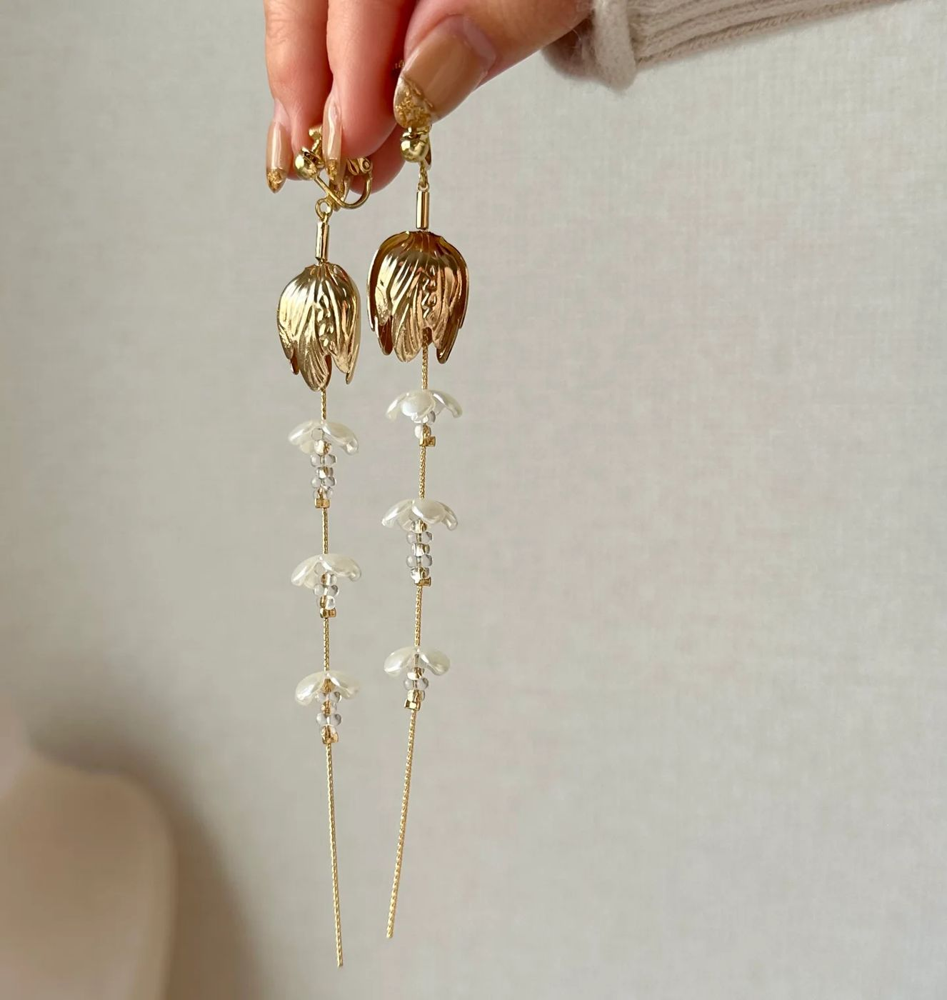
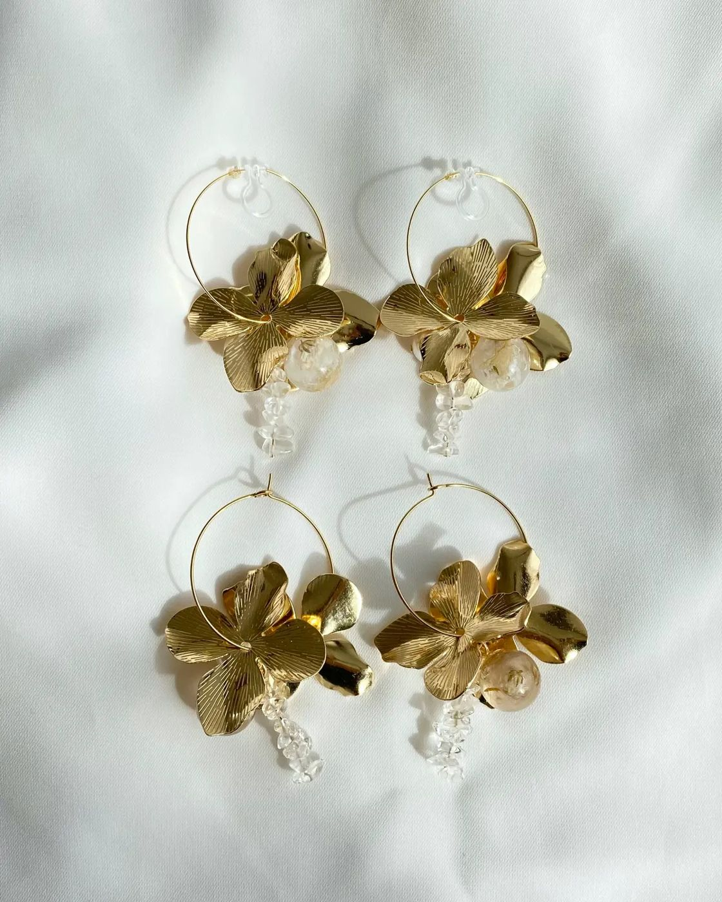
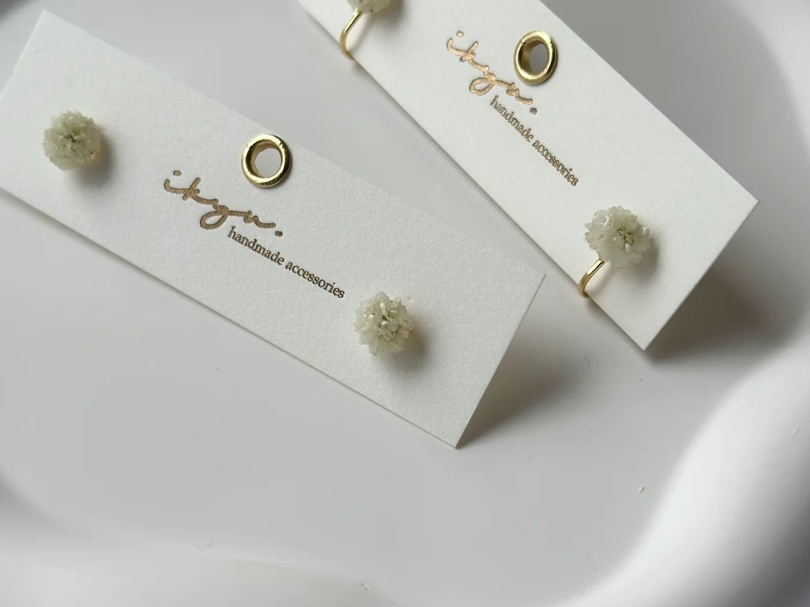
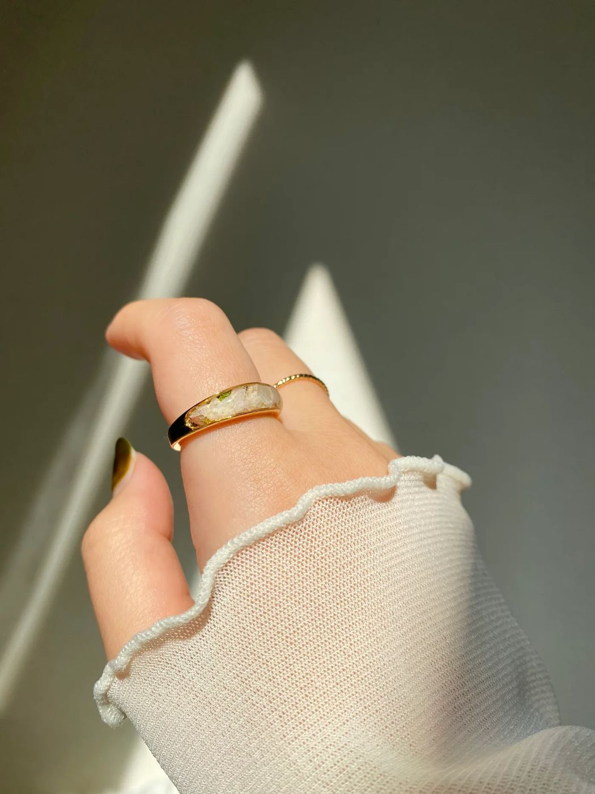
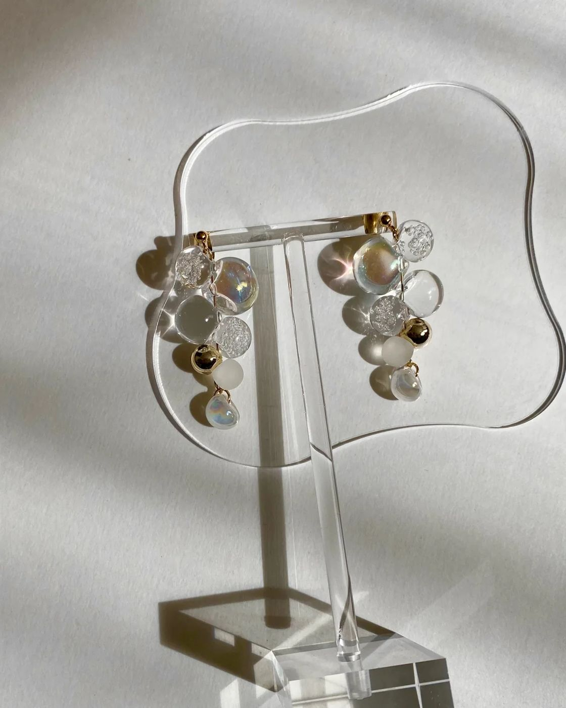
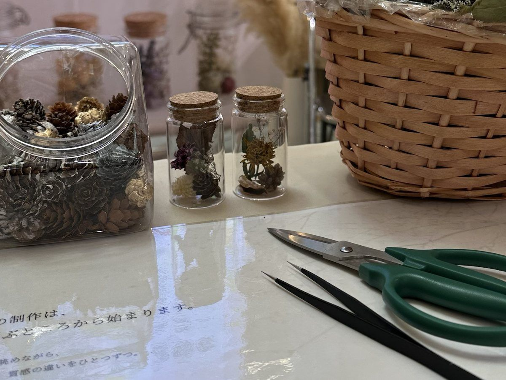
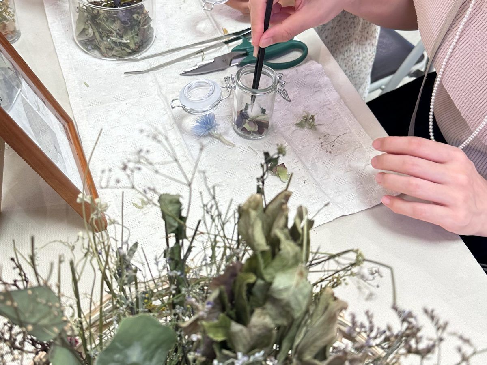
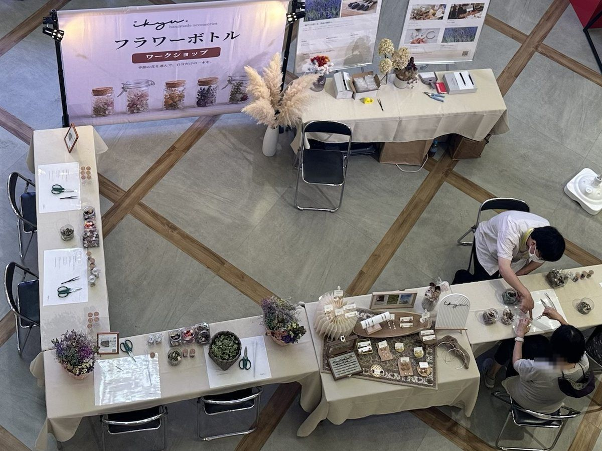
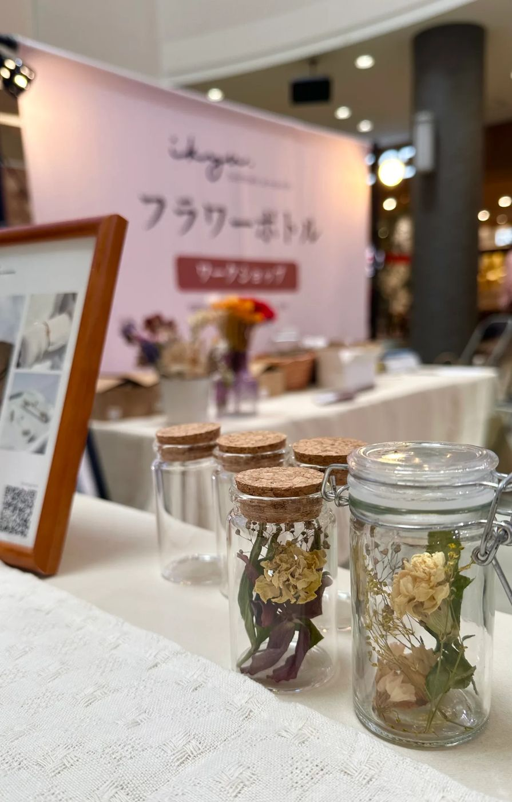
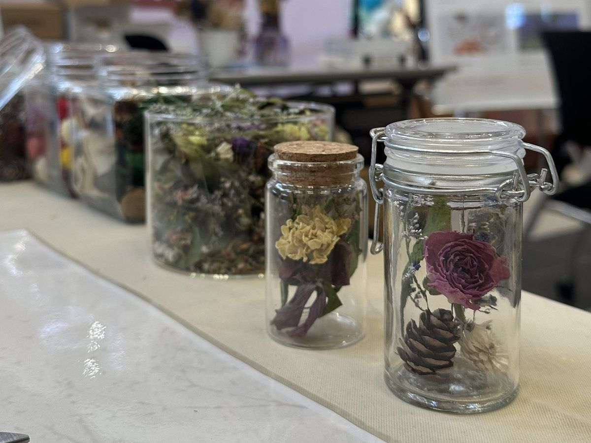

ikyu
handmade accessories ／ 札幌
暮らしに花が
咲きますように。
フラワーボトル ワークショップ
開催のご案内
企業・施設のご担当者さまへ
2026年10月版
暮らしに花が
咲きますように。
フラワーボトル ワークショップ
開催のご案内
企業・施設のご担当者さまへ
2026年10月版

About ikyu
ikyu（イキュ）は、北海道札幌のハンドメイドアクセサリーブランドです。花屋さんで選んだ生花を時間をかけてドライフラワーへ育て、透明感のある素材とあわせて、ひとつずつ手しごとで仕上げています。
作品はminneとイベント出店で販売しています。
公式サイト ikyumakes.com ／ Instagram @___ikyu___




Workshop
色とりどりのドライフラワーから好きな花を選び、ピンセットで小さなガラスボトルへ。
完成した一本は、そのままお持ち帰りいただけます。

01
季節の花材の中から、好きな色と花を。

02
色の重なりを考えて、入れる順番を決めます。

03
ピンセットで一輪ずつ。スタッフがそばでお手伝いします。

04
自分だけの一本を、そのままお持ち帰り。
所要時間
1組 約10〜15分
対象
小さなお子さまから
シニアの方まで
これまでの開催形式
参加無料・予約不要
材料・道具
花材・道具一式を
持ち込み
Record
6会期
商業施設・公共空間
札幌市・北広島市
延べ20日間
1,127本
フラワーボトル制作数
6会期の累計
98本
1日の最多制作数
2026年8月1日 51組・126名
運営スタッフ1名で対応
| 会期 | 会場 | 参加 | 制作数 |
|---|---|---|---|
| 6月19日〜21日 | チカホ北三条広場（札幌市） | — | 220本 |
| 8月1日〜3日 | アリオ札幌 1F 特設スペース | 117組 | 235本 |
| 8月17日〜21日 | アリオ札幌 1F ハーベストコート | 216組 | 380本 |
| 9月4日〜7日 | 三井アウトレットパーク札幌北広島 | 71組 | 106本 |
| 9月11日〜13日 | ザ・ビッグ厚別店 | 87組 | 137本 |
| 9月14日〜15日 | アリオ札幌 1F ハーベストコート | 37組 | 49本 |
| 合計 | 1,127本 | ||


What we do
ハンドメイドアクセサリーブランド ikyu による体験です。企画・当日運営・実施報告は KitaKita Lab が担当します。
01
会場の広さや目的、来場者層に合わせて、内容とブースの見せ方を設計します。
02
自家製ドライフラワーを中心とした花材、ボトル、道具一式を用意します。
03
バナー、花材のディスプレイ、ikyuの作品展示で会場をつくります。
04
制作のサポートとご案内。スタッフ人数は会場に合わせてご相談します。
05
参加組数・時間帯などをまとめた報告書をお渡しします。
Voices
お金を取ったほうがいい
アリオ札幌（2026年8月1日）
すごいかわいい！こんなの初めて！
親子でご参加のお客さま（アリオ札幌）
イベントの雰囲気を見て、何をやっているのかすごく惹かれて参加しました
ザ・ビッグ厚別店
いい記念になりました
ご家族でご参加のお客さま（アリオ札幌）

Contact
時期や会場が決まる前の段階でも、ご相談いただけます。